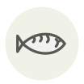

Japanese Spanish mackerel (sawara) ✦
Thazard oriental (sawara)
| Latin name | Scomberomorus niphonius |
|---|---|
| Family | Fish & seafood |
| Origin | Seto Inland Sea, Japan |
| Season (France) | March – May |
| Flavour | Rich · Delicate · Mild |
| Typical price (France) | 35–60 €/kg |
What it is
Its kanji is written with the characters for fish and spring, after the March run that enters the Seto Inland Sea to spawn. Tokyo buyers disagree: on the Pacific side the same fish is fattest in midwinter and is sold then as kan-zawara.
In the kitchen
The flesh tears if you handle it like mackerel. Cure it two days in saikyo miso, wipe the miso off completely, then grill it far from the heat — the miso sugars burn long before the fish is done.
Goes with
Saikyo miso Hon-mirin Junmai sake Sansho pepper Negi Daikon Koikuchi shoyu Yuzu
In season alongside
Acacia honey Pauillac lamb Allis shad Brill Brousse du Rove Charolais
Something wrong here, or missing? Tell us